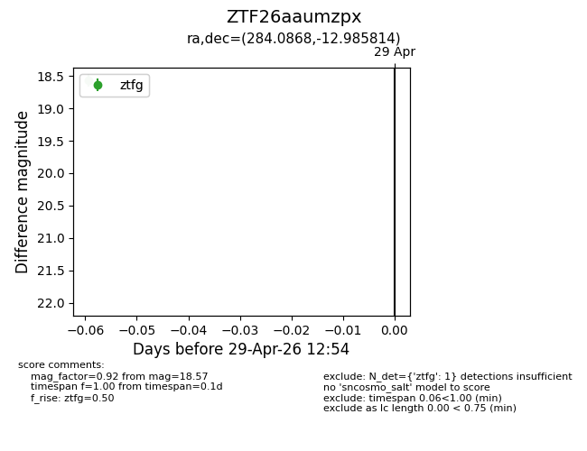
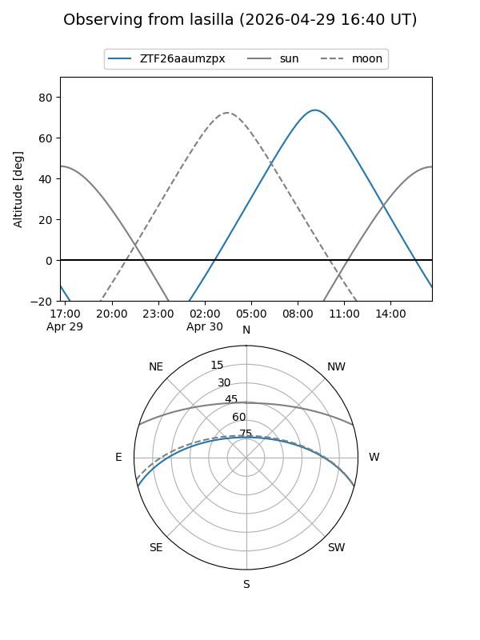
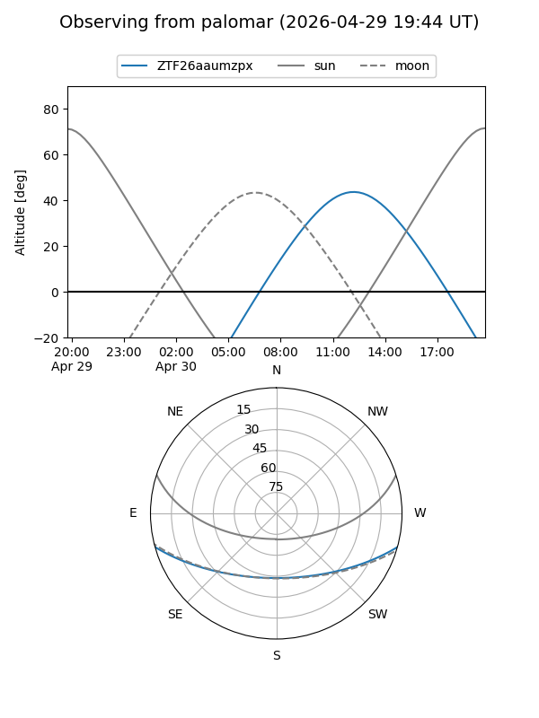

ZTF26aaumzpx
Target ZTF26aaumzpx at 2026-04-29 12:58
Aliases and brokers:
FINK: link
Lasair: link
ALeRCE: link
alt names
ZTF26aaumzpx (ztf,fink_ztf)
Coordinates:
equatorial (ra, dec) = 284.0868,-12.98581
equatorial (HMS+DMS) = 18:56:20.83,-12:59:08.93
galactic (l, b) = (21.8692,-6.95209)
Flags:
Photometry:
last ztfg=18.57
1 ztfg detections
Lightcurve

Visibility


Additional plots